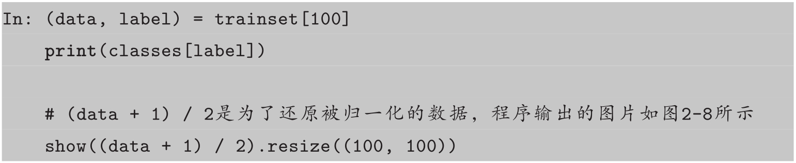
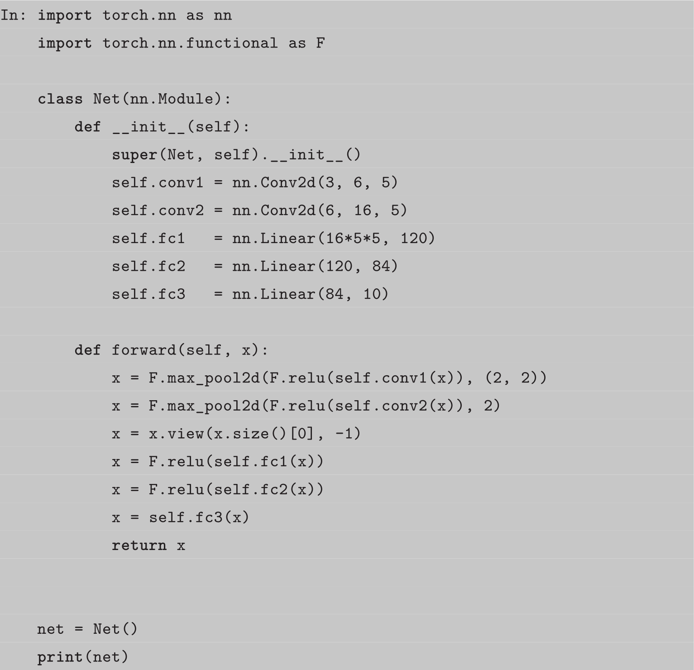

内容简介
本书从多维数组Tensor开始，循序渐进地带领读者了解PyTorch各方面的基础知识，并结合基础知识和前沿研究，带领读者从零开始完成几个经典有趣的深度学习小项目，包括GAN生成动漫头像、AI滤镜、AI写诗等。本书没有简单机械地介绍各个函数接口的使用，而是尝试分门别类、循序渐进地向读者介绍PyTorch的知识，希望读者对PyTorch有一个完整的认识。
本书内容由浅入深，无论是深度学习的初学者，还是第一次接触PyTorch的研究人员，都能在学习本书的过程中快速掌握PyTorch。即使是有一定PyTorch使用经验的用户，也能够从本书中获得对PyTorch不一样的理解。
未经许可，不得以任何方式复制或抄袭本书之部分或全部内容。
版权所有，侵权必究。
图书在版编目（CIP）数据
深度学习框架PyTorch：入门与实践/陈云编著.—北京：电子工业出版社，2018.1
ISBN 978-7-121-33077-3
Ⅰ.①深… Ⅱ.①陈… Ⅲ.①机器学习-研究 Ⅳ.①TP181
中国版本图书馆CIP数据核字（2017）第286730号
策划编辑：郑柳洁
责任编辑：郑柳洁
印刷：三河市双峰印刷装订有限公司
装订：三河市双峰印刷装订有限公司
出版发行：电子工业出版社
北京市海淀区万寿路173信箱 邮编：100036
开本：787×980 1/16 印张：18.75 字数：353千字
版次：2018年1月第1版
印次：2018年1月第1次印刷
定 价：65.00元
凡所购买电子工业出版社图书有缺损问题，请向购买书店调换。若书店售缺，请与本社发行部联系，联系及邮购电话：（010）88254888，88258888。
质量投诉请发邮件至zlts@phei.com.cn，盗版侵权举报请发邮件至dbqq@phei.com.cn。
本书咨询联系方式：（010）51260888-819 faq@phei.com.cn。
前言
为什么写这本书
2016年是属于TensorFlow的一年，凭借谷歌的大力推广，TensorFlow占据了各大媒体的头条。2017年年初，PyTorch的横空出世吸引了研究人员极大的关注，PyTorch简洁优雅的设计、统一易用的接口、追风逐电的速度和变化无方的灵活性给人留下深刻的印象。
作为一门2017年刚刚发布的深度学习框架，研究人员所能获取的学习资料有限，中文资料更是比较少。笔者长期关注PyTorch发展，经常在论坛上帮助PyTorch新手解决问题，在平时的科研中利用PyTorch进行各个方面的研究，有着丰富的使用经验。看到国内的用户对PyTorch十分感兴趣，迫切需要一本能够全面讲解PyTorch的书籍，于是本书就这么诞生了。
本书的结构
本书分为两部分：第2～5章主要介绍PyTorch的基础知识。
• 第2章介绍PyTorch的安装和配置学习环境。同时以最概要的方式介绍PyTorch的主要内容，让读者对PyTorch有一个大概的整体印象。
• 第3章介绍PyTorch中多维数组Tensor和动态图autograd/Variable的使用，并配以例子，让读者分别使用Tensor和autograd实现线性回归，比较二者的不同点。本章还对Tensor的底层设计，以及autograd的原理进行了分析，给读者以更全面具体的讲解。
• 第4章介绍PyTorch中神经网络模块nn的基础用法，同时讲解了神经网络中的“层”、“损失函数”、“优化器”等，最后带领读者用不到50行的代码搭建出曾夺得ImageNet冠军的ResNet。
• 第5章介绍PyTorch中数据加载、GPU加速和可视化等相关工具。
第6～10章主要介绍实战案例。
• 第6章是承上启下的一章，目标不是教会读者新函数、新知识，而是结合Kaggle中一个经典的比赛，实现一个深度学习中比较简单的图像二分类问题。在实现的过程中，带领读者复习前5章的知识，并提出代码规范以合理地组织程序和代码，使程序更可读、可维护。第6章还介绍在PyTorch中如何进行debug。
• 第7章为读者讲解当前最火爆的生成对抗网络（GAN），带领读者从零开始实现一个动漫头像生成器，能够利用GAN生成风格多变的动漫头像。
• 第8章为读者讲解风格迁移的相关知识，并带领读者实现风格迁移网络，将自己的照片变成“高大上”的名画。
• 第9章为读者讲解一些自然语言处理的基础知识，并讲解CharRNN的原理。然后利用其收集几万首唐诗，训练出一个可以自动写诗歌的小程序。这个小程序可以控制生成诗歌的格式和意境，还能生成藏头诗。
• 第10章为读者介绍图像描述任务，并以最新的AI Challenger比赛的数据为例，带领读者实现一个可以进行简单图像描述的小程序。
第1章和第11章是本书的首章和末章，第1章介绍PyTorch的优势，以及和市面上其他几款框架的对比。第11章是对本书的总结，以及对PyTorch不足之处的思考，同时对读者未来的学习提出建议。
关于代码
本书的所有代码都开源在GitHub[1]上，其中：
• 第2～5章的代码以Jupyter Notebook形式提供，读者可以在自己的计算机上交互式地修改运行它。
• 第6～10章的代码以单独的程序给出，每个函数的作用与细节在代码中有大量的注释。
本书的代码，在最新版的PyTorch 0.2上运行，同时支持Python 2和Python 3，其中：
• 前5章的代码同时在Python 2.7和Python 3.5上验证，并得到最终结果。
• 第6～10章的代码，主要在Python 2.7上运行并得到最终结果，同时在Python 3.5上测试未报错。
适读人群
学习本书需要读者具备以下基础知识：
• 了解Python的基础语法，掌握基础的Python使用方法。
• 有一定深度学习基础，了解反向传播、卷积神经网络等基础知识，但并不要求深入了解。
• 具备梯度、导数等高中数学基础知识。
以下知识不是必需的，但最好了解：
• numpy的使用。
• 深度学习的基本流程或者其他深度学习框架的使用。
本书不适合哪些读者：
• 没有任何深度学习基础的用户。
• 没有Python基础的用户。
• 只能使用Windows的用户。
本书约定
在本书中，笔者是本书编著者的自称，作者指的是软件、论文等的作者，读者指阅读本书的你。
本书前5章的代码由Jupyter Notebook转换而来，其中：
• In后面跟着的是输入的代码。
• Out是指程序的运行结果，运行结果取决于In的最后一行。
• Print后面跟着程序的打印输出内容，只有在In程序中调用了 print函数/语句才会有Print输出。
• Jupyter会自动输出Image对象和matplotlib可视化结果，所以书中以“程序输出”命名的图片都来自Jupyter的程序输出。这些图片的说明在代码注释中。
如何使用本书
本书第2章是PyTorch快速入门，第3～5章是对这些内容的详细深入介绍。第6章是一个简单而完整的深度学习案例。
如果你是经验丰富的研究人员，之前对PyTorch十分熟悉，对本书的某些例子比较感兴趣，那么你可以跳过前5章，直接阅读第6章，了解这些例子的程序设计与文件组织安排，然后阅读相应的例子。
如果你是初学者，想以最快的速度掌握PyTorch并将PyTorch应用到实际项目中，那么你可以花费2～3小时阅读2.2节的相关内容。如果你需要深入了解某部分的内容，那么可以阅读相应章节。
如果你是初学者，想完整全面地掌握PyTorch，那么建议你：
• 先阅读第1～5章，了解PyTorch的各个基础知识。
• 再阅读第6章，了解PyTorch实践中的技巧。
• 最后从第7～10章挑选出感兴趣的例子，动手实践。
最后，希望读者在阅读本书的时候，尽量结合本书的配套代码阅读、修改、运行之。
致谢
杜玉姣同学在我编写本书的时候，给了我许多建议，并协助审阅了部分章节，在此特向她表示谢意。在编写本书时，本书编辑郑柳洁女士给予了很大的帮助，在此特向她致谢。感谢我的家人一直以来对我的支持，感谢我的导师肖波副教授对我的指导。感谢我的同学、师弟师妹们，他们在使用PyTorch中遇到了很多问题，给了我许多反馈意见。
由于笔者水平所限，书中难免有错误和不当之处，欢迎读者批评指正。具体意见可以发表在GitHub上的issue（https：//github.com/chenyuntc/pytorch-book/issues）中，或者通过邮箱（i@knew.be）联系笔者。
1 PyTorch简介
1.1 PyTorch的诞生
2017年1月，Facebook人工智能研究院（FAIR）团队在GitHub上开源了PyTorch （PyTorch的Logo如图1-1所示），并迅速占领GitHub热度榜榜首。
作为一个2017年才发布，具有先进设计理念的框架，PyTorch的历史可追溯到2002年就诞生于纽约大学的Torch。Torch使用了一种不是很大众的语言Lua作为接口。Lua简洁高效，但由于其过于小众，用的人不是很多，以至于很多人听说要掌握Torch必须新学一门语言就望而却步（其实Lua是一门比Python还简单的语言）。
图1-1 PyTorch的Logo，英文Torch是火炬的意思，所以Logo中有火焰
考虑到Python在计算科学领域的领先地位，以及其生态完整性和接口易用性，几乎任何框架都不可避免地要提供Python接口。终于，在2017年，Torch的幕后团队推出了PyTorch。PyTorch不是简单地封装Lua Torch提供Python接口，而是对Tensor之上的所有模块进行了重构，并新增了最先进的自动求导系统，成为当下最流行的动态图框架。
PyTorch一经推出就立刻引起了广泛关注，并迅速在研究领域流行起来。图1-2所示为Google指数，PyTorch自发布起关注度就在不断上升，截至2017年10月18日，PyTorch的热度已然超越了其他三个框架（Caffe、MXNet和Theano），并且其热度还在持续上升中。
图1-2 PyTorch和Caffe、Theano、MXNet的Google指数对比（类别为科学）
1.2 常见的深度学习框架简介
随着深度学习的发展，深度学习框架如雨后春笋般诞生于高校和公司中。尤其是近两年，Google、Facebook、Microsoft等巨头都围绕深度学习重点投资了一系列新兴项目，他们也一直在支持一些开源的深度学习框架。
目前研究人员正在使用的深度学习框架不尽相同，有TensorFlow、Caffe、Theano、Keras等，常见的深度学习框架如图1-3所示。这些深度学习框架被应用于计算机视觉、语音识别、自然语言处理与生物信息学等领域，并获取了极好的效果。本节主要介绍当前深度学习领域影响力比较大的几个框架，限于笔者个人使用经验和了解程度，对各个框架的评价可能有不准确的地方。
1.2.1 Theano
Theano最初诞生于蒙特利尔大学LISA实验室，于2008年开始开发，是第一个有较大影响力的Python深度学习框架。
Theano是一个Python库，可用于定义、优化和计算数学表达式，特别是多维数组（numpy.ndarray）。在解决包含大量数据的问题时，使用Theano编程可实现比手写C语言更快的速度，而通过GPU加速，Theano甚至可以比基于CPU计算的C语言快上好几个数量级。Theano结合了计算机代数系统（Computer Algebra System，CAS）和优化编译器，还可以为多种数学运算生成定制的C语言代码。对于包含重复计算的复杂数学表达式的任务而言，计算速度很重要，因此这种CAS和优化编译器的组合是很有用的。对需要将每一种不同的数学表达式都计算一遍的情况，Theano可以最小化编译/解析的计算量，但仍然会给出如自动微分那样的符号特征。
Theano诞生于研究机构，服务于研究人员，其设计具有较浓厚的学术气息，但在工程设计上有较大的缺陷。一直以来，Theano因难调试、构建图慢等缺点为人所诟病。为了加速深度学习研究，人们在它的基础之上，开发了Lasagne、Blocks、PyLearn2和Keras等第三方框架，这些框架以Theano为基础，提供了更好的封装接口以方便用户使用。
2017年9月28日，在Theano 1.0正式版即将发布前夕，LISA实验室负责人，深度学习三巨头之一的Yoshua Bengio宣布Theano即将停止开发：“Theano is Dead”。尽管Theano即将退出历史舞台，但作为第一个Python深度学习框架，它很好地完成了自己的使命，为深度学习研究人员的早期拓荒提供了极大的帮助，同时也为之后深度学习框架的开发奠定了基本设计方向：以计算图为框架的核心，采用GPU加速计算。
2017年11月，LISA实验室在GitHub上开启了一个初学者入门项目，旨在帮助实验室新生快速掌握机器学习相关的实践基础，而该项目正是使用PyTorch作为教学框架。
点评：由于Theano已经停止开发，不建议作为研究工具继续学习。
1.2.2 TensorFlow
2015年11月10日，Google宣布推出全新的机器学习开源工具TensorFlow。Tensor-Flow最初是由Google机器智能研究部门的Google Brain团队开发，基于Google 2011年开发的深度学习基础架构DistBelief构建起来的。TensorFlow主要用于进行机器学习和深度神经网络研究，但它是一个非常基础的系统，因此也可以应用于众多领域。由于Google在深度学习领域的巨大影响力和强大的推广能力，TensorFlow一经推出就获得了极大的关注，并迅速成为如今用户最多的深度学习框架。
TensorFlow在很大程度上可以看作Theano的后继者，不仅因为它们有很大一批共同的开发者，而且它们还拥有相近的设计理念，都是基于计算图实现自动微分系统。TensorFlow使用数据流图进行数值计算，图中的节点代表数学运算，而图中的边则代表在这些节点之间传递的多维数组（张量）。
TensorFlow编程接口支持Python和C++。随着1.0版本的公布，Java、Go、R和Haskell API的alpha版本也被支持。此外，TensorFlow还可在Google Cloud和AWS中运行。TensorFlow还支持Windows 7、Windows 10和Windows Server 2016。由于TensorFlow使用C++Eigen库，所以库可在ARM架构上编译和优化。这也就意味着用户可以在各种服务器和移动设备上部署自己的训练模型，无须执行单独的模型解码器或者加载Python解释器。
作为当前最流行的深度学习框架，TensorFlow获得了极大的成功，对它的批评也不绝于耳，总结起来主要有以下四点。
• 过于复杂的系统设计，TensorFlow在GitHub代码仓库的总代码量超过100万行。这么大的代码仓库，对于项目维护者来说维护成为了一个难以完成的任务，而对读者来说，学习TensorFlow底层运行机制更是一个极其痛苦的过程，并且大多数时候这种尝试以放弃告终。
• 频繁变动的接口。TensorFlow的接口一直处于快速迭代之中，并且没有很好地考虑向后兼容性，这导致现在许多开源代码已经无法在新版的TensorFlow上运行，同时也间接导致了许多基于TensorFlow的第三方框架出现BUG。
• 接口设计过于晦涩难懂。在设计TensorFlow时，创造了图、会话、命名空间、Place-Holder等诸多抽象概念，对普通用户来说难以理解。同一个功能，TensorFlow提供了多种实现，这些实现良莠不齐，使用中还有细微的区别，很容易将用户带入坑中。
• 文档混乱脱节。TensorFlow作为一个复杂的系统，文档和教程众多，但缺乏明显的条理和层次，虽然查找很方便，但用户却很难找到一个真正循序渐进的入门教程。由于直接使用TensorFlow的生产力过于低下，包括Google官方等众多开发者尝试
基于TensorFlow构建一个更易用的接口，包括Keras、Sonnet、TFLearn、TensorLayer、Slim、Fold、PrettyLayer等数不胜数的第三方框架每隔几个月就会在新闻中出现一次，但是又大多归于沉寂，至今TensorFlow仍没有一个统一易用的接口。
凭借Google着强大的推广能力，TensorFlow已经成为当今最炙手可热的深度学习框架，但是由于自身的缺陷，TensorFlow离最初的设计目标还很遥远。另外，由于Google对TensorFlow略显严格的把控，目前各大公司都在开发自己的深度学习框架。
点评：不完美但最流行的深度学习框架，社区强大，适合生产环境。
1.2.3 Keras
Keras是一个高层神经网络API，由纯Python编写而成并使用TensorFlow、Theano及CNTK作为后端。Keras为支持快速实验而生，能够把想法迅速转换为结果。Keras应该是深度学习框架之中最容易上手的一个，它提供了一致而简洁的API，能够极大地减少一般应用下用户的工作量，避免用户重复造轮子。
严格意义上讲，Keras并不能称为一个深度学习框架，它更像一个深度学习接口，它构建于第三方框架之上。Keras的缺点很明显：过度封装导致丧失灵活性。Keras最初作为Theano的高级API而诞生，后来增加了TensorFlow和CNTK作为后端。为了屏蔽后端的差异性，提供一致的用户接口，Keras做了层层封装，导致用户在新增操作或是获取底层的数据信息时过于困难。同时，过度封装也使得Keras的程序过于缓慢，许多BUG都隐藏于封装之中，在绝大多数场景下，Keras是本节介绍的所有框架中最慢的一个。
学习Keras十分容易，但是很快就会遇到瓶颈，因为它缺少灵活性。另外，在使用Keras的大多数时间里，用户主要是在调用接口，很难真正学习到深度学习的内容。
点评：入门最简单，但是不够灵活，使用受限。
1.2.4 Caffe/Caffe2
Caffe的全称是Convolutional Architecture for Fast Feature Embedding，它是一个清晰、高效的深度学习框架，核心语言是C++，它支持命令行、Python和MATLAB接口，既可以在CPU上运行，也可以在GPU上运行。
Caffe的优点是简洁快速，缺点是缺少灵活性。不同于Keras因为太多的封装导致灵活性丧失，Caffe灵活性的缺失主要是因为它的设计。在Caffe中最主要的抽象对象是层，每实现一个新的层，必须要利用C++实现它的前向传播和反向传播代码，而如果想要新层运行在GPU上，还需要同时利用CUDA实现这一层的前向传播和反向传播。这种限制使得不熟悉C++和CUDA的用户扩展Caffe十分困难。
Caffe凭借其易用性、简洁明了的源码、出众的性能和快速的原型设计获取了众多用户，曾经占据深度学习领域的半壁江山。但是在深度学习新时代到来之时，Caffe已经表现出明显的力不从心，诸多问题逐渐显现（包括灵活性缺失、扩展难、依赖众多环境难以配置、应用局限等）。尽管现在在GitHub上还能找到许多基于Caffe的项目，但是新的项目已经越来越少。
Caffe的作者从加州大学伯克利分校毕业后加入了Google，参与过TensorFlow的开发，后来离开Google加入FAIR，担任工程主管，并开发了Caffe2。Caffe2是一个兼具表现力、速度和模块性的开源深度学习框架。它沿袭了大量的Caffe设计，可解决多年来在Caffe的使用和部署中发现的瓶颈问题。Caffe2的设计追求轻量级，在保有扩展性和高性能的同时，Caffe2也强调了便携性。Caffe2从一开始就以性能、扩展、移动端部署作为主要设计目标。Caffe2的核心C++库能提供速度和便携性，而其Python和C++API使用户可以轻松地在Linux、Windows、iOS、Android，甚至Raspberry Pi和NVIDIA Tegra上进行原型设计、训练和部署。
Caffe2继承了Caffe的优点，在速度上令人印象深刻。Facebook人工智能实验室与应用机器学习团队合作，利用Caffe2大幅加速机器视觉任务的模型训练过程，仅需1小时就训练完ImageNet这样超大规模的数据集。然而尽管已经发布半年多，开发一年多，Caffe2仍然是一个不太成熟的框架，官网至今没提供完整的文档，安装也比较麻烦，编译过程时常出现异常，在GitHub上也很少找到相应的代码。
极盛的时候，Caffe占据了计算机视觉研究领域的半壁江山，虽然如今Caffe已经很少用于学术界，但是仍有不少计算机视觉相关的论文使用Caffe。由于其稳定、出众的性能，不少公司还在使用Caffe部署模型。Caffe2尽管做了许多改进，但是还远没有达到替代Caffe的地步。
点评：文档不够完善，但性能优异，几乎全平台支持（Caffe2），适合生产环境。
1.2.5 MXNet
MXNet是一个深度学习库，支持C++、Python、R、Scala、Julia、MATLAB及JavaScript等语言；支持命令和符号编程；可以运行在CPU、GPU、集群、服务器、台式机或者移动设备上。MXNet是CXXNet的下一代，CXXNet借鉴了Caffe的思想，但是在实现上更干净。在2014年的NIPS上，同为上海交大校友的陈天奇与李沐碰头，讨论到各自在做深度学习Toolkits的项目组，发现大家普遍在做很多重复性的工作，例如文件loading等。于是他们决定组建DMLC〔Distributied （Deep）Machine Learning Community〕，号召大家一起合作开发MXNet，发挥各自的特长，避免重复造轮子。
MXNet以其超强的分布式支持，明显的内存、显存优化为人所称道。同样的模型，MXNet往往占用更小的内存和显存，并且在分布式环境下，MXNet展现出了明显优于其他框架的扩展性能。
由于MXNet最初由一群学生开发，缺乏商业应用，极大地限制了MXNet的使用。2016年11月，MXNet被AWS正式选择为其云计算的官方深度学习平台。2017年1月，MXNet项目进入Apache基金会，成为Apache的孵化器项目。
尽管MXNet拥有最多的接口，也获得了不少人的支持，但其始终处于一种不温不火的状态。个人认为这在很大程度上归结于推广不给力及接口文档不够完善。MXNet长期处于快速迭代的过程，其文档却长时间未更新，导致新手用户难以掌握MXNet，老用户常常需要查阅源码才能真正理解MXNet接口的用法。
为了完善MXNet的生态圈，推广MXNet，MXNet先后推出了包括MinPy、Keras和Gluon等诸多接口，但前两个接口目前基本停止了开发，Gluon模仿PyTorch的接口设计，MXNet的作者李沐更是亲自上阵，在线讲授如何从零开始利用Gluon学习深度学习，诚意满满，吸引了许多新用户。
点评：文档略混乱，但分布式性能强大，语言支持最多，适合AWS云平台使用。
1.2.6 CNTK
2015年8月，微软公司在CodePlex上宣布由微软研究院开发的计算网络工具集CNTK将开源。5个月后，2016年1月25日，微软公司在他们的GitHub仓库上正式开源了CNTK。早在2014年，在微软公司内部，黄学东博士和他的团队正在对计算机能够理解语音的能力进行改进，但当时使用的工具显然拖慢了他们的进度。于是，一组由志愿者组成的开发团队构想设计了他们自己的解决方案，最终诞生了CNTK。
根据微软开发者的描述，CNTK的性能比Caffe、Theano、TensoFlow等主流工具都要强。CNTK支持CPU和GPU模式，和TensorFlow/Theano一样，它把神经网络描述成一个计算图的结构，叶子节点代表输入或者网络参数，其他节点代表计算步骤。CNTK是一个非常强大的命令行系统，可以创建神经网络预测系统。CNTK最初是出于在Microsoft内部使用的目的而开发的，一开始甚至没有Python接口，而是使用了一种几乎没什么人用的语言开发的，而且文档有些晦涩难懂，推广不是很给力，导致现在用户比较少。但就框架本身的质量而言，CNTK表现得比较均衡，没有明显的短板，并且在语音领域效果比较突出。
点评：社区不够活跃，但是性能突出，擅长语音方面的相关研究。
1.2.7 其他框架
除了上述的几个框架，还有不少的框架，都有一定的影响力和用户。比如百度开源的PaddlePaddle，CMU开发的DyNet，简洁无依赖符合C++11标准的tiny-dnn，使用Java开发并且文档极其优秀的Deeplearning4J，还有英特尔开源的Nervana，Amazon开源的DSSTNE。这些框架各有优缺点，但是大多流行度和关注度不够，或者局限于一定的领域，因此不做过多的介绍。此外，还有许多专门针对移动设备开发的框架，如CoreML、MDL，这些框架纯粹为部署而诞生，不具有通用性，也不适合作为研究工具，同样不做介绍。
1.3 属于动态图的未来
2016年，随着TensorFlow的如日中天，几乎所有人都觉得深度学习框架之争接近尾声，但2017年却迎来了基于动态图的深度学习框架的爆发。
几乎所有的框架都是基于计算图[1]的，而计算图又可以分为静态计算图和动态计算图，静态计算图先定义再运行（define and run），一次定义多次运行，而动态计算图是在运行过程中被定义的，在运行的时候构建（define by run），可以多次构建多次运行。PyTorch和TensorFlow都是基于计算图的深度学习框架，PyTorch使用的是动态图，而TensorFlow使用的是静态图。在PyTorch中每一次前向传播（每一次运行代码）都会创建一幅新的计算图，如图1-4所示。
静态图一旦创建就不能修改，而且静态图定义的时候，使用了特殊的语法，就像新学一门语言。这还意味着你无法使用if、while、for-loop等常用的Python语句。因此静态图框架不得不为这些操作专门设计语法，同时在构建图的时候必须把所有可能出现的情况都包含进去，这也导致了静态图过于庞大，可能占用过高的显存。动态图框架就没有这个问题，它可以使用Python的if、while、for-loop等条件语句，最终创建的计算图取决于你执行的条件分支。
我们来看看if条件语句在TensorFlow和PyTorch中的两种实现方式，第一个利用PyTorch动态图的方式实现。
第二个利用TensorFlow静态图的方式实现。
可以看出，PyTorch的实现方式完全和Python的语法一致，简洁直观；而TensorFlow的实现不仅代码冗长，而且十分不直观。
动态计算图的设计思想正被越来越多人所接受，2017年1月20日前后，先后有三款深度学习框架发布：PyTorch、MinPy和DyNet，这三个框架都是基于动态图的设计模式。PyTorch便是其中的佼佼者，至今已成为动态图框架的代表。在PyTorch之前，Chainer就以动态图思想设计框架，并获得用户的一致好评，然而Chainer是由日本科学家开发的，开发人员和文档都偏向于日本本土，没有很好地做推广。PyTorch的发布让许多用户第一次发现原来深度学习框架可以如此灵活、如此容易、还如此快速。
动态图的思想直观明了，更符合人的思考过程。动态图的方式使得我们可以任意修改前向传播，还可以随时查看变量的值。如果说静态图框架好比C++，每次运行都要编译才行（session.run），那么动态图框架就是Python，动态执行，可以交互式查看修改。动态图的这个特性使得我们可以在IPython和Jupyter Notebook上随时查看和修改变量，十分灵活。
动态图带来的另外一个优势是调试更容易，在PyTorch中，代码报错的地方，往往就是你写错代码的地方，而静态图需要先根据你的代码生成Graph对象，然后在session.run（）时报错，这种报错几乎很难找到对应的代码中真正错误的地方。
1.4 为什么选择PyTorch
这么多深度学习框架，为什么选择PyTorch呢？
因为PyTorch是当前难得的简洁优雅且高效快速的框架。在笔者眼里，PyTorch达到目前深度学习框架的最高水平。当前开源的框架中，没有哪一个框架能够在灵活性、易用性、速度这三个方面有两个能同时超过PyTorch。下面是许多研究人员选择PyTorch的原因。
• 简洁：PyTorch的设计追求最少的封装，尽量避免重复造轮子。不像TensorFlow中充斥着session、graph、operation、name_scope、variable、tensor、layer等全新的概念，PyTorch的设计遵循tensor→variable（autograd）→nn.Module三个由低到高的抽象层次，分别代表高维数组（张量）、自动求导（变量）和神经网络（层/模块），而且这三个抽象之间联系紧密，可以同时进行修改和操作。
简洁的设计带来的另外一个好处就是代码易于理解。PyTorch的源码只有Tensor-Flow的十分之一左右，更少的抽象、更直观的设计使得PyTorch的源码十分易于阅读。在笔者眼里，PyTorch的源码甚至比许多框架的文档更容易理解。
• 速度：PyTorch的灵活性不以速度为代价，在许多评测中，PyTorch的速度表现胜过TensorFlow和Keras等框架[2]，[3]。框架的运行速度和程序员的编码水平有极大关系，但同样的算法，使用PyTorch实现的那个更有可能快过用其他框架实现的。
• 易用：PyTorch是所有的框架中面向对象设计的最优雅的一个。PyTorch的面向对象的接口设计来源于Torch，而Torch的接口设计以灵活易用而著称，Keras作者最初就是受Torch的启发才开发了Keras。PyTorch继承了Torch的衣钵，尤其是API的设计和模块的接口都与Torch高度一致。PyTorch的设计最符合人们的思维，它让用户尽可能地专注于实现自己的想法，即所思即所得，不需要考虑太多关于框架本身的束缚。
• 活跃的社区：PyTorch提供了完整的文档，循序渐进的指南，作者亲自维护的论坛[4]供用户交流和求教问题。Facebook人工智能研究院对PyTorch提供了强力支持，作为当今排名前三的深度学习研究机构，FAIR的支持足以确保PyTorch获得持续的开发更新，不至于像许多由个人开发的框架那样昙花一现。
在PyTorch推出不到一年的时间内，各类深度学习问题都有利用PyTorch实现的解决方案在GitHub上开源。同时也有许多新发表的论文采用PyTorch作为论文实现的工具，PyTorch正在受到越来越多人的追捧[5]。
如果说 TensorFlow 的设计是“Make It Complicated”，Keras 的设计是“Make It Complicated And Hide It”，那么PyTorch的设计真正做到了“Keep it Simple，Stupid”。简洁即是美。
使用TensorFlow能找到很多别人的代码，使用PyTorch能轻松实现自己的想法。
1.5 星火燎原
尽管2017年TensorFlow的新闻依旧铺天盖地，但是我们能很明显地感受到PyTorch正越来越流行。2017年的年度深度学习框架属于PyTorch。
2017年1月18日，PyTorch发布。
2017年2月，最著名的深度学习课程，斯坦福大学的CS231N公布了课程大纲，将发布才一个多月的PyTorch选为课程教学框架，使用PyTorch布置作业，并提供教程。
2017年3月31日～4月12日，奖金高达100万美元的Kaggle数据科学竞赛（Data Science Bowl 2017）落幕，名为grt123的队伍使用刚发布不久的PyTorch以较大优势夺冠。
2017年4月25日，深度学习年度盛会ICLR 2017在法国举行，PyTorch获得了极大关注。短短三个月，PyTorch就获得了极大的认可。
2017年下半年，PyTorch的新闻越来越多，关注度持续提升。PyTorch 0.2版本发布，新增分布式训练、高阶导数、自动广播法则等众多新特性。
艾伦人工智能研究院开源了AllenNLP，基于PyTorch轻松构建NLP模型，几乎适用于任何NLP问题。
Facebook和微软宣布，推出Open Neural Network Exchange（ONNX，开放神经网络交换）格式，这是一个用于表示深度学习模型的标准，可使模型在不同框架之间进行转移。ONNX是迈向开放生态系统的第一步，ONNX目前支持PyTorch、Caffe2和CNTK，未来会支持更多的框架。除了Facebook和微软，AMD、ARM、华为、IBM、英特尔、高通也宣布支持ONNX。
著名的深度学习教育网站fast.ai宣布，他们的下一个课程，将完全基于PyTorch，抛弃原来的TensorFlow和Keras。
不同于Google在各个场合大力宣传TensorFlow，PyTorch的流行更多是由于其简洁优雅的设计吸引了用户，几乎每一个PyTorch用户都会自发地宣传PyTorch。TensorFlow确实流行，但正如PyTorch slack中用户制作的一张调侃图（如图1-5所示）所说，如果你无法用TensorFlow快速实现你的想法，不要因为TensorFlow最流行就使用它。
就在PyTorch发布不久后，OpenAI的科学家，Tesla的AI部门主管Andrej Karpathy就发了一篇意味深长的Twitter：
Matlab is so 2012.Caffe is so 2013.Theano is so 2014.Torch is so 2015.Ten-sorFlow is so 2016.:D
图1-5 如果不能用TensorFlow实现自己的想法，就不用它
2017年5月，Andrej Karpathy又发了一篇Twitter，调侃道：
I've been using PyTorch a few months now.I've never felt better.I have more energy.My skin is clearer.My eye sight has improved.
2017年马上要过去了，你还在等什么？
1.6 fast.ai放弃Keras+TensorFlow选择PyTorch
fast.ai CEO Jeremy Howard在fast.ai官网[6]宣布下一个课程将完全基于一个使用Py-Torch开发的框架，抛弃原来的TensorFlow和Keras框架。
官网通告部分翻译如下。
我们在开发《面向程序员的前沿深度学习》这门课的时候遇到瓶颈，因为原来选的TensorFlow和Keras框架让我们处处碰壁。例如，现在自然语言处理中最重要的技术，大概是Attention模型。可是我们发现，当时在Keras上没有Attention模型的有效实现，而TensorFlow实现缺乏必要文档、不断的变化，而且过于复杂以至于难以理解。于是我们决定利用Keras实现Attention模型，这花了我们好长时间，调试过程也十分痛苦。
随后，我们开始尝试实现dynamic teacher forcing，这是神经网络翻译系统的关键，但无论是在Keras里还是在TensorFlow里，我们都找不到这个模型的参考实现，而我们自己尝试实现的系统直接就不能用。
这时，PyTorch的第一个预发布版出现了。这个新框架不是基于静态计算图，而是一个动态的框架，这为我们带来了新的希望。动态框架让我们在开发自己的神经网络时，只需要写普通的Python代码，像正常用Python一样调试。我们都没有专门学习PyTorch，第一次用PyTorch，就用它实现了Attention模型和dynamic teacher forcing，只用了几个小时。
上文提到的那门课的一个重要目标就是让学生能读最近的论文，然后实现它们。自己实现深度学习模型的能力十分重要，因为到目前为止，我们十分关注学术研究，对深度学习的应用反倒很有限。因此，用深度学习解决很多现实世界问题的时候，不仅需要了解基础技术，还要能针对特定的问题和数据实现定制化的深度学习模型。
PyTorch，让学生能充分利用普通Python代码的灵活性和能力构建、训练神经网络。这样，他们就能解决更广泛的问题。
PyTorch的另一个好处是，它能让学生更深入地了解每个算法中发生了什么。用TensorFlow那样的静态计算图库，你一旦声明性地表达了你的计算，就把它发送到了GPU，整个处理过程就是一个黑箱。但是通过动态的方法，你可以完全进入计算的每一层，清楚地看到正在发生的情况。我们认为学习深度学习的最佳途径就是通过编程、实验，动态的方法正是我们的学生所需要的。
令我们惊奇的是，我们还发现很多模型在PyTorch上训练比在TensorFlow上更快。这和我们所熟知的“静态计算图能带来更多优化，所以应该性能更好”恰恰相反。
在实践中我们看到，有些模型快一点，有些慢一点，每个月都不一样。问题的关键似乎在以下两点。
• PyTorch提高了开发人员的生产力和调试经验，因此可以带来更快的开发迭代和更好的实现。
• PyTorch中更小、更集中的开发团队不会对每个功能都进行微优化，而是在整体设计上寻求“大胜”。
笔者认为fast.ai的这篇博客很好地对比了PyTorch和Keras+TensorFlow。
• 许多论文方法都没有TensorFlow的开源实现，或者实现的质量不如人意，并且TensorFlow和Keras难以调试。
• PyTorch容易上手（fast.ai研究人员第一次用PyTorch就实现了Attention模型和dynamic teacher forcing）。
• PyTorch易于调试，十分灵活、透明；TensorFlow和Keras难以调试，就像一个黑箱。
• PyTorch比TensorFlow快。
2 快速入门
本章主要介绍两个内容，2.1节介绍如何安装PyTorch，以及如何配置学习环境；2.2节将带领读者快速浏览PyTorch中主要的内容，给读者一个关于PyTorch的大致印象。
2.1 安装与配置
2.1.1 安装PyTorch
PyTorch是一款以Python语言主导开发的轻量级深度学习框架。在使用PyTorch之前，需要安装Python环境及其pip包管理工具，推荐使用Virtualenv配置虚拟Python环境。本书中所有代码使用PyTorch 0.2版本，同时兼容Python2和Python3，并全部在Python2环境中运行得到最终结果，在Python3环境测试未报错，但并不保证得到和Python2环境一致的结果。另外，本书默认使用Linux作为开发环境。
为方便用户安装使用，PyTorch官方提供了多种安装方法。本节将介绍几种常用的安装方式，读者可以根据自己的需求选用。
使用pip安装
目前，使用pip安装PyTorch二进制包是最简单、最不容易出错，同时也是最适合新手的安装方式。从PyTorch官网[1]选择操作系统、包管理器pip、Python版本及CUDA版本，会对应不同的安装命令，如图2-1所示。
以Linux平台、pip安装、Python2.7及CUDA8.0为例，安装命令如下（根据不同系统配置，可将pip改为pip2或pip3）。
安装好PyTorch之后，还需安装Numpy，安装命令如下。
或者使用系统自带的包管理器（apt，yum等）安装numpy，然后使用pip升级。
全部安装完成后，打开Python，运行如下命令。
没有报错则表示PyTorch安装成功。
安装过程中需要注意以下几点。
（1）PyTorch对应的Python包名为torch而非pytorch。
（2）若需使用GPU版本的PyTorch，需要先配置英伟达显卡驱动，再安装PyTorch。
使用conda安装
conda是Anaconda自带的包管理器。如果使用Anaconda作为Python环境，则除了使用pip安装，还可使用conda进行安装。同样，在PyTorch官网中选择操作系统、包管理器conda、Python版本及CUDA版本，对应不同的安装命令。我们以在OS X下安装Python3.6、CPU版本的PyTorch为例介绍，如图2-2所示。
安装命令如下：
conda的安装速度可能较慢，建议国内用户，尤其是教育网用户把conda源设置为清华tuna。在命令行输入如下命令即可完成修改。
即使是使用Anaconda的用户，也建议使用pip安装PyTorch，一劳永逸，而且不易出错。
从源码编译安装
不建议新手从源码编译安装，因为这种安装方式对环境比较敏感，需要用户具备一定的编译安装知识，以及应对错误的能力。但若想使用官方未发布的最新功能，或某个BUG刚修复，官方还未提供二进制安装包，而读者又亟需这个补丁，此时就需要从GitHub上下载源码编译安装。
从源码编译安装，推荐使用Anaconda环境。如果想使用GPU版本，则需安装CUDA 7.5及以上和cuDNN v5及以上（如果已装有CUDA，但不想被PyTorch使用，只需设置环境变量NO CUDA=1）。
首先，安装可选依赖。
1)Linux
2)OS X
其次，下载PyTorch源码。
最后，完成编译安装。
1)Linux
2)OS X
使用Docker部署
Docker是一个开源的应用容器引擎，让开发者可以打包他们的应用及依赖包到一个可移植的容器中，并发布到任何流行的Linux机器上，也可实现虚拟化。PyTorch官方提供了Dockerfile，支持CUDA和cuDNN v6。可通过如下命令构建Docker镜像。
通过如下命令运行：
注意：PyTorch中数据加载（Dataloader）使用了大量的共享内存，可能超出容器限制，需设置--shm-size选项或使用--ipc=host选项解决。
Windows用户安装PyTorch
PyTorch官方尚不支持Windows平台，推荐Windows用户在虚拟机中安装Linux，或者使用双系统。尽管现在官方还未支持Windows系统，但开发者的热情高涨[2]，并已有用户提供了对应的Anaconda安装包，只需按照如下命令执行即可安装。
但需注意这个版本较不稳定，未获得官方的维护，因此不建议新手使用。关于Win-dows版本PyTorch的更多信息，请查阅蒲嘉宸的知乎专栏[3]。
2.1.2 学习环境配置
工欲善其事，必先利其器，在从事科学计算相关工作时，IPython和Jupyter是两个必不可少的工具。推荐使用IPython和Jupyter Notebook学习本书的示例代码。
IPython
IPython是一个交互式计算系统，可认为是增强版的Python Shell，提供强大的REPL （交互式解析器）功能。对于从事科学计算的用户来说，它提供方便的可交互式学习及调试功能。
安装IPython十分简单，对于Python2的用户，安装命令如下。
IPython 5.x是最后一个支持Python2的IPython。Python3的用户可通过如下命令安装最新版IPython 6.0。
安装完成后，在命令行输入ipython即可启动IPython，启动界面如下。
输入exit命令或者按“Ctrl+D”快捷键可退出IPython。IPython有许多强大的功能，其中最常用的功能如下。
自动补全 IPython最方便的功能之一是自动补全，输入一个函数或者变量的前几个字母，按下Tab键，就能实现自动补全，如图2-3所示。
内省 所谓内省，主要是指在Runtime时获得一个对象的全部类型信息，这对实际的学习有很大帮助。输入某一个函数或者模块之后，接着输入？可看到它对应的帮助文档，有些帮助文档比较长，可能跨页，这时可按空格键翻页，输入q退出。例如：
在函数或模块名之后输入两个问号，例如t.FloatTensor？？即可查看这个对象的源码，但只能查看对应Python的源码，无法查看C/C++的源码。
快捷键 IPython提供了很多快捷键。例如，按上箭头可以重新输入上一条代码；一直按上箭头，可以追溯到之前输入的代码。按“Ctrl+C”快捷键可以清空当前输入或停止运行的程序。常用的快捷键如表2-1所示。
魔术方法 IPython中还提供了一些特殊的命令，这些命令以%开头，称为魔术命令，例如可通过%hist查看在当前IPython下的输入历史等，示例如下。
和普通Python对象一样，魔术方法也支持自省，因此也可在命令后面加“？”或“？？”来查看对应的帮助文档或源代码，例如通过%run？可查看它的使用说明。其他常用魔术命令如表2-2所示。
“%xdel”与“del”的不同在于前者会删除其在IPython上的一切引用，具体例子如下。
粘贴 IPython支持多种格式的粘贴，除了%paste魔法方法，还可以直接粘贴多行代码、doctest代码和IPython的代码，举例如下（下面的代码都使用“Ctrl+V”快捷键的方式直接粘贴。如果是Linux终端，则应该使用“Ctrl+Shift+V”快捷键直接粘贴，或者单击鼠标右键，选择“粘贴”选项）。
使用IPython进行调试 IPython的调试器ipdb增强了pdb，提供了很多实用功能，例如Tab键自动补全、语法高亮等。在IPython中进入pdb的最快速方式是使用魔术命令%debug，此时用户能够直接跳到报错的代码处，可通过u、d实现堆栈中的上下移动，常用的调试命令如表2-3所示。
debug是一个重要功能，不仅在学习PyTorch时需要用到，在平时学习Python或使用IPython时也会经常使用。更多的debug功能，可通过h ＜命令＞查看该命令的使用方法。
如果想在IPython之外使用debug功能，则需安装ipdb（pip install ipdb），而后在需要进入调试的地方加上如下代码即可。
当程序运行到这一步时，会自动进入debug模式。
Jupyter Notebook
Jupyter Notebook是一个交互式笔记本，前身是IPython Notebook，后来从IPython中独立出来，现支持运行40多种编程语言。对希望编写漂亮的交互式文档和从事科学计算的用户来说是一个不错的选择。
Jupyter Notebook的使用方法与IPython非常类似，推荐使用Jupyter Notebook主要有如下三个原因。
• 更美观的界面：相比在终端下使用IPython，Notebook提供图形化操作界面，对新手而言更美观简洁。
• 更好的可视化支持：Notebook与Web技术深度融合，支持在Notebook中直接可视化，这对需要经常绘图的科学运算实验来说很方便。
• 方便远程访问：在服务器端开启Notebook服务后，客户端只需有浏览器且能访问服务器，就可使用服务器上的Notebook，这对于很多使用Linux服务器，但办公电脑使用Windows的人来说十分方便，避免了在本地配置环境的复杂流程。
安装Jupyter只需一条pip命令。
安装完成后，在命令行输入jupyter notebook命令即可启动Jupyter，此时浏览器会自动弹出，并打开Jupyter主界面，也可手动打开浏览器，输入http：//127.0.0.1：8888访问Jupyter，界面如图2-4所示。
单击页面右上角的“new”选项，选择相应的Notebook类型（Python3/Python2），可新建一个Notebook，在In[]后面的编辑区输入代码，按“Ctrl+Enter”快捷键，即可运行代码，如图2-5所示。
远程访问服务器Jupyter的用户需要在服务器中搭建Jupyter Notebook服务，然后通过浏览器访问。可以根据需要对Jupyter设置访问密码。
首先，打开IPython，设置密码，获取加密后的密码。
sha1：f9c17b...即为加密后的密码，新建jupyter_config.py，输入如下配置。
其次，启动Jupyter Notebook并指定配置文件，输入如下命令。
最后，客户端打开浏览器，访问url http：//[服务器ip]：9999，输入密码，即可访问Jupyter。
若客户端浏览器无法打开Jupyter，有可能是防火墙的缘故，输入如下命令开放对应的端口（若使用IPv6，把命令iptables改成ip6tables）。
Jupyter的使用和IPython极为类似，我们介绍的IPython使用技巧对Jupyter基本都适用。它支持自动补全、内省、魔术方法、debug等功能，但它的快捷键与IPython有较大不同，可通过菜单栏的【Help】→【Keyboard Shortcuts】查看详细的快捷键。
Jupyter还支持很多功能，如Markdown语法、HTML、各种可视化等。更多关于IPython和Jupyter Notebook的使用技巧，读者可以从网上找到很多学习资源，这里只介绍一些最基础的、本书会用到的内容。
2.2 PyTorch入门第一步
PyTorch的简洁设计使得它易于入门，在深入介绍PyTorch之前，本节先介绍一些PyTorch的基础知识，使读者能够对PyTorch有一个大致的了解，并能够用PyTorch搭建一个简单的神经网络。部分内容读者可能不太理解，可先不予深究，本书的第3章和第4章将会对此进行深入讲解。
本节内容参考了PyTorch官方教程[4]并做了相应的增删，使得内容更贴合新版本的PyTorch接口，同时也更适合新手快速入门。另外，本书需要读者先掌握基础的numpy使用，numpy的基础知识可以参考CS231n上关于numpy的教程[5]。
2.2.1 Tensor
Tensor是PyTorch中重要的数据结构，可认为是一个高维数组。它可以是一个数（标量）、一维数组（向量）、二维数组（矩阵）或更高维的数组。Tensor和numpy的ndarrays类似，但Tensor可以使用GPU加速。Tensor的使用和numpy及MATLAB的接口十分相似，下面通过几个示例了解Tensor的基本使用方法。
torch.Size是tuple对象的子类，因此它支持tuple的所有操作，如x.size（）[0]。
注意，函数名后面带下画线 的函数会修改Tensor本身。例如，x.add （y）和x.t （）会改变x，但x.add（y）和x.t（）会返回一个新的Tensor，而x不变。
Tensor还支持很多操作，包括数学运算、线性代数、选择、切片等，其接口设计与numpy极为相似。更详细的使用方法会在第3章系统讲解。
Tensor和numpy的数组间的互操作非常容易且快速。Tensor不支持的操作，可以先转为numpy数组处理，之后再转回Tensor。
Tensor和numpy对象共享内存，所以它们之间的转换很快，而且几乎不会消耗资源。这也意味着，如果其中一个变了，另外一个也会随之改变。
Tensor可通过.cuda方法转为GPU的Tensor，从而享受GPU带来的加速运算。
在此处可能会发现GPU运算的速度并未提升太多，这是因为x和y太小且运算也较简单，而且将数据从内存转移到显存还需要花费额外的开销。GPU的优势需在大规模数据和复杂运算下才能体现出来。
2.2.2 Autograd：自动微分
深度学习的算法本质上是通过反向传播求导数，PyTorch的Autograd模块实现了此功能。在Tensor上的所有操作，Autograd都能为它们自动提供微分，避免手动计算导数的复杂过程。
autograd.Variable是Autograd中的核心类，它简单封装了Tensor，并支持几乎所有Tensor的操作。Tensor在被封装为Variable之后，可以调用它的.backward实现反向传播，自动计算所有梯度。Variable的数据结构如图2-6所示。
Variable主要包含三个属性。
• data：保存Variable所包含的Tensor。
• grad：保存data对应的梯度，grad也是个Variable，而不是Tensor，它和data的形状一样。
• grad fn：指向一个Function对象，这个Function用来反向传播计算输入的梯度，具体细节会在第3章讲解。
注意：grad在反向传播过程中是累加的（accumulated），这意味着每次运行反向传播，梯度都会累加之前的梯度，所以反向传播之前需把梯度清零。
Variable和Tensor具有近乎一致的接口，在实际使用中可以无缝切换。
2.2.3 神经网络
Autograd实现了反向传播功能，但是直接用来写深度学习的代码在很多情况下还是稍显复杂，torch.nn是专门为神经网络设计的模块化接口。nn构建于Autograd之上，可用来定义和运行神经网络。nn.Module是nn中最重要的类，可以把它看作一个网络的封装，包含网络各层定义及forward方法，调用forward（input）方法，可返回前向传播的结果。我们以最早的卷积神经网络LeNet为例，来看看如何用nn.Module实现。LeNet的网络结构如图2-7所示。
这是一个基础的前向传播（feed-forward）网络：接收输入，经过层层传递运算，得到输出。
定义网络
定义网络时，需要继承nn.Module，并实现它的forward方法，把网络中具有可学习参数的层放在构造函数 init 中。如果某一层（如ReLU）不具有可学习的参数，则既可以放在构造函数中，也可以不放，但笔者建议不放在其中，而在forward中使用nn.functional代替。
只要在nn.Module的子类中定义了forward函数，backward函数就会被自动实现（利用Autograd）。在forward 函数中可使用任何Variable支持的函数，还可以使用if、for循环、print、log等Python语法，写法和标准的Python写法一致。
网络的可学习参数通过net.parameters （）返回，net.named parameters可同时返回可学习的参数及名称。
forward函数的输入和输出都是Variable，只有Variable才具有自动求导功能，Tensor是没有的，所以在输入时，需要把Tensor封装成Variable。
需要注意的是，torch.nn只支持mini-batches，不支持一次只输入一个样本，即一次必须是一个batch。如果只想输入一个样本，则用 input.unsqueeze （0）将batch_size设为1。例如，nn.Conv2d输入必须是4维的，形如nSamples×nChannels×Height×Width。可将nSample设为1，即1×nChannels×Height×Width。
损失函数
nn 实现了神经网络中大多数的损失函数，例如 nn.MSELoss 用来计算均方误差，nn.CrossEntropyLoss用来计算交叉熵损失。
如果对loss进行反向传播溯源（使用grad fn属性），可看到它的计算图如下：
当调用loss.backward （）时，该图会动态生成并自动微分，也会自动计算图中参数（Parameter）的导数。
优化器
在反向传播计算完所有参数的梯度后，还需要使用优化方法更新网络的权重和参数。例如，随机梯度下降法（SGD）的更新策略如下：
手动实现如下：
torch.optim中实现了深度学习中绝大多数的优化方法，例如 RMSProp、Adam、SGD等，更便于使用，因此通常并不需要手动写上述代码。
数据加载与预处理
在深度学习中数据加载及预处理是非常复杂烦琐的，但PyTorch提供了一些可极大简化和加快数据处理流程的工具。同时，对于常用的数据集，PyTorch也提供了封装好的接口供用户快速调用，这些数据集主要保存在torchvision中。
torchvision实现了常用的图像数据加载功能，例如Imagenet、CIFAR10、MNIST等，以及常用的数据转换操作，这极大地方便了数据加载。
2.2.4 小试牛刀：CIFAR-10分类
下面我们来尝试实现对CIFAR-10数据集的分类，步骤如下：
（1）使用torchvision加载并预处理CIFAR-10数据集。
（2）定义网络。
（3）定义损失函数和优化器。
（4）训练网络并更新网络参数。
（5）测试网络。
CIFAR-10数据加载及预处理
CIFAR-10[6]是一个常用的彩色图片数据集，它有10个类别airplane、automobile、bird、cat、deer、dog、frog、horse、ship和truck。每张图片都是3×32×32，也即3通道彩色图片，分辨率为32×32。
Dataset对象是一个数据集，可以按下标访问，返回形如（data，label）的数据。

Dataloader是一个可迭代的对象，它将dataset返回的每一条数据样本拼接成一个batch，并提供多线程加速优化和数据打乱等操作。当程序对dataset的所有数据遍历完一遍之后，对Dataloader也完成了一次迭代。
定义网络
复制上面的LeNet网络，修改self.conv1中第一个参数为3通道，因为CIFAR-10是3通道彩图。

定义损失函数和优化器（loss和optimizer）
训练网络
所有网络的训练流程都是类似的，不断地执行如下流程。
• 输入数据。
• 前向传播+反向传播。
• 更新参数。
此处仅训练了2个epoch（遍历完一遍数据集称为一个epoch），我们来看看网络有没有效果。将测试图片输入网络，计算它的label，然后与实际的label进行比较。
接着计算网络预测的label：
我们已经可以看出效果，准确率为75%，但这只是一部分图片，我们再来看看在整个测试集上的效果。
训练的准确率远比随机猜测（准确率为10%）好，证明网络确实学到了东西。
在GPU上训练
就像之前把Tensor从CPU转到GPU一样，模型也可以类似地从CPU转到GPU。
如果发现在GPU上训练的速度并没比在CPU上提速很多，实际是因为网络比较小，GPU没有完全发挥自己的真正实力。
对PyTorch的基础介绍至此结束。总结一下，本节主要包含以下内容。
（1）Tensor：类似numpy数组的数据结构，与numpy接口类似，可方便地互相转换。
（2）autograd/Variable：Variable封装了Tensor，并提供自动求导功能。
（3）nn：专门为神经网络设计的接口，提供了很多有用的功能（神经网络层、损失函数、优化器等）。
（4）神经网络训练：以CIFAR-10分类为例演示了神经网络的训练流程，包括数据加载、网络搭建、训练及测试。
通过本章的学习，读者能够配置PyTorch+Jupyter+IPython的学习环境。另外，通过2.2节关于PyTorch的概要介绍，相信读者可以体会出PyTorch接口简单、使用灵活等特点。如果有哪些内容读者没有理解，不用着急，这些内容会在后续章节深入和详细地讲解。